Как подключить прокси mtproto для телеграмм пошаговая инструкция
MTProto для телеграмм наиболее популярный прокси для бесперебойной работы мессенджера. Данный прокси является официальным протоколом Telegram.
В этой 3-ех шаговой инструкции вы узнаете, как быстро установить прокси mtproto для телеграмма на арендованном сервере и подключить его к вашему мессенджеру.
Требования по установки прокси mtproto для телеграмма
Минимальные требования
- Операционная система: Ubuntu 20.04 / 22.04 (чистая установка)
- Сервер (VPS): 1 ядро, 512 MB RAM — этого достаточно
- Доступ по SSH (корень или пользователь с sudo)
- Открытый порт 443 (нужен для маскировки под HTTPS)
Вся инструкция будет построена на примере провайдера Aeza. Вы можете использовать любого другого провайдера, предоставляющего аренду VPS серверов в Европе.
И так, погнали:
Шаг 1 — Арендуем забугорный сервер и подключаемся
Регистрируемся в Aeza.net и переходим в меню слева, добавить услугу (см. скрин, подчеркнуто красным). По центру выбираем локацию, ищем Европу с ценой в 5,93 евро, на скрине в качестве примера выбрана Вена.
Справа проверяем, чтобы были отключены бэкапы, они не нужны, выделено прямоугольником на скрине. Автопродление по желанию.
Прокручиваем чуть ниже и переключаем на Ubuntu 20.04 / 22.04, по умолчанию стоит 26.04, она еще сырая, переключить обязательно!
Больше ничего устанавливать не требуется, нужна чистая операционка.
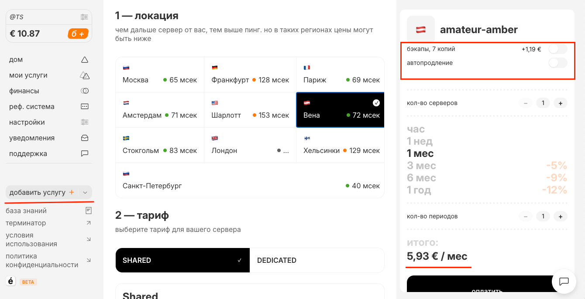
Аренда сервера в панели Aeza
Далее нажимаем оплатить. Оплата от рублевых карт, до криптовалют.
Открывают после оплаты от 2 до 15 минут, о чем извещают по почте. Далее переходим в левом меню на вкладку мои услуги:
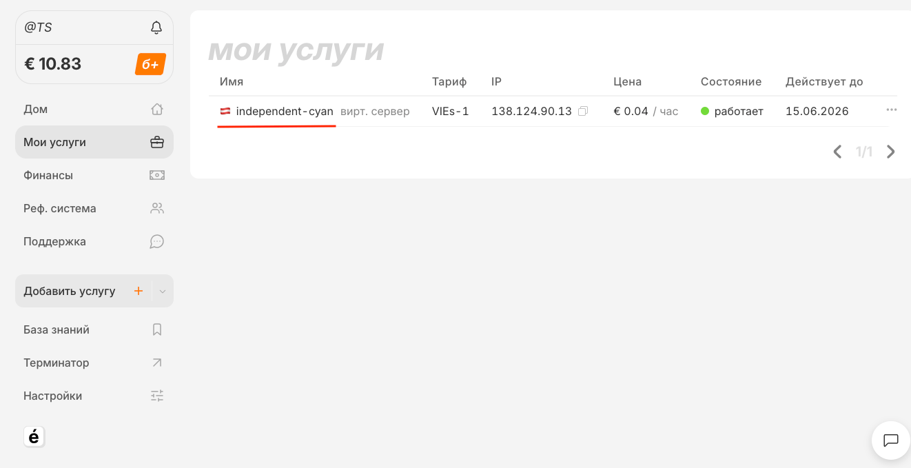
Вкладка "Мои услуги" в панели Aeza
И нажимаем на название сервера, подчеркнуто красным. Откроется окно с данными для входа, см. скрин.
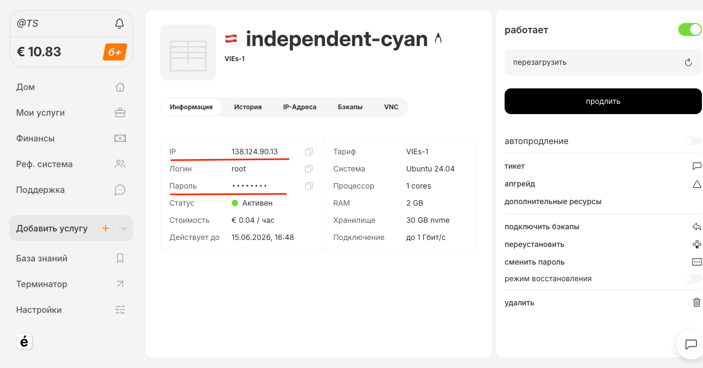
Данные сервера: IP, логин, пароль
Данные будут в таком формате:
- ip: 86.163.135.43 (IP вашего сервера будет другой);
- логин: root (чаще всего логин такой);
- пароль: E7D4sF3csSjg (пароль от вашего сервера будет другой);
Для настройки сервера понадобится доступ к самому серверу с данными (логином, паролем и ip адресом, поэтому их важно сохранить). Делается это все с компьютера (с телефона не тестил, может и можно, пишите в комментах), под Windows или MacOS.
Под Win потребуется специальная программка, обладатели MacOS воспользуются встроенным терминалом.
Итак, погнали:
Windows — скачиваем и ставим программу для подключения к нашему серверу: переходим на https://www.putty.org/ скачиваем и устанавливаем. После установки появится ярлык на рабочем столе, запустите его, как показано на скрине.
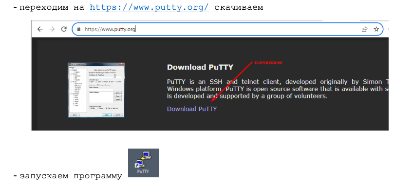
Установка и запуск Putty на Windows
Подключаемся к нашему серверу, вводим IP сервера, порт 22 и нажимаем Open, как показано на рисунке ниже.
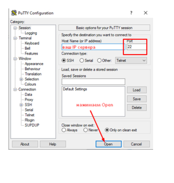
Подключение к серверу через Putty
Далее, идем во вкладку Подключение (Connection) и в первой строке в поле для ввода прописываем любое число от 20 до 50, например 50, как показано на рисунке.

Настройка параметров Connection в Putty
Нажимаем Open
Когда заходим на сервер в первый раз, то нужно нажать Accept в окне, которое появится. Далее, в следующем окне поочередно вводим логин и пароль, каждый раз нажимая Enter.
ВНИМАНИЕ! при вводе пароля на экране символы не отображаются, это нормально. Чтобы вставить скопированный пароль — просто нажмите один раз на ПКМ (правую кнопку мыши) в окне авторизации на черном фоне и затем Enter, см. скрин.
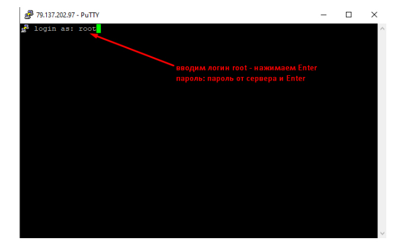
Ввод логина и пароля в Putty
В случае успешного подключения пройдет загрузка данных о системе и будет приглашение на выдачу команд Вашему серверу. В примере ниже- это приглашение на самой последней строке и выглядит — root@TESTVDS:~# Эта строка означает, что сервер готов принимать в обработку и выполнение Ваши команды.
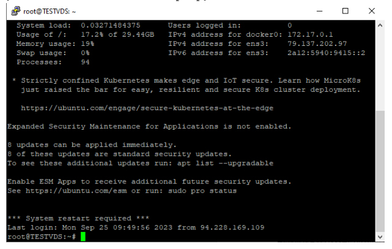
Успешное подключение к серверу
Все, супер, подключение состоялось, переходите чуть ниже, дальше инструкция для MacOS. Хотя рекомендую оценить инструкцию и понять прелесть использования Макентошей.
MacOS — если у вас мак, тогда мы будем использовать встроенный терминал, так как нет смысла устанавливать сторонние программы для того, чтобы один раз на пару минут зайти на сервер.
Итак, вводим в лаунчпаде в поиске слово Терминал или Terminal, видим это
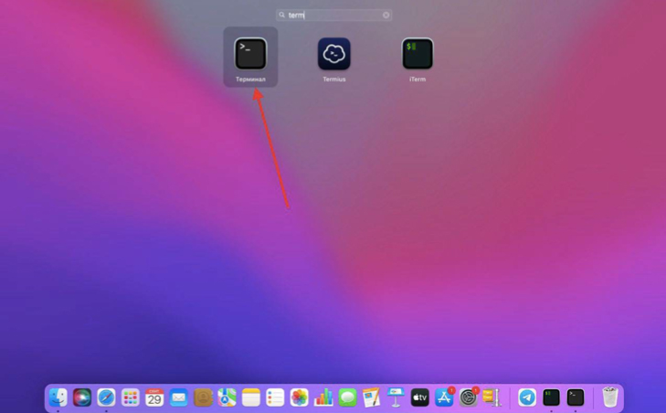
Поиск терминала на MacOS
Открываем терминал, прописываем команду и нажимаем Enter
ssh ваш_логин@IP-адрес_сервера
то есть, если мой логин root а айпи сервера 79.137.202.97, то команда в терминал будет
ssh root@79.137.202.97
далее, вставляем пароль, нажимаем Enter готово.
При удачном подключении должно получится, как на скрине — root@название сервера.
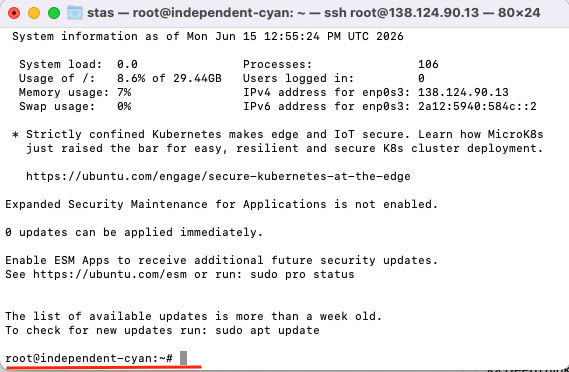
Подключение к серверу через терминал MacOS
Шаг 2 — Настраиваем прокси сервер mtproto для телеграмма
Далее необходимо ввести всего одну команду и нажать энтер:
sudo apt update && sudo apt upgrade -y && sudo apt install docker.io ufw -y && sudo ufw allow OpenSSH && sudo ufw allow 443/tcp && sudo ufw --force enable && SECRET=$(docker run --rm nineseconds/mtg:2 generate-secret --hex google.com) && docker run -d --name mtg --restart=always -p 443:443 nineseconds/mtg:2 simple-run -n 1.1.1.1 -i prefer-ipv4 0.0.0.0:443 "$SECRET" && echo "✅ ГОТОВАЯ ССЫЛКА: tg://proxy?server=$(curl -s ifconfig.me)&port=443&secret=$SECRET"
Команда вводится целиком, без пробелов, как есть. В ходе установки будет задан вопрос, ответить надо — yes. Далее вылетит 3 или 4 окна, как показано на скрине ниже, ввести надо Enter, четыре раза.
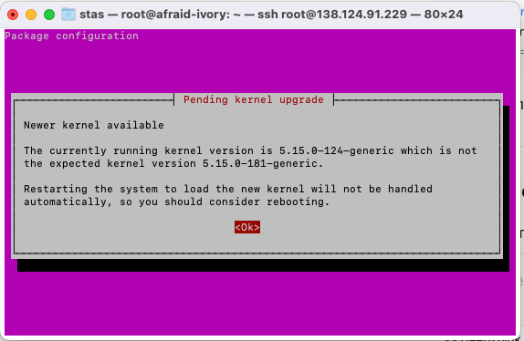
Запрос подтверждения установки
Результатом установки будет готовый Европейский сервер с прокси mtproto для телеграмма. Смотри скрин ниже.
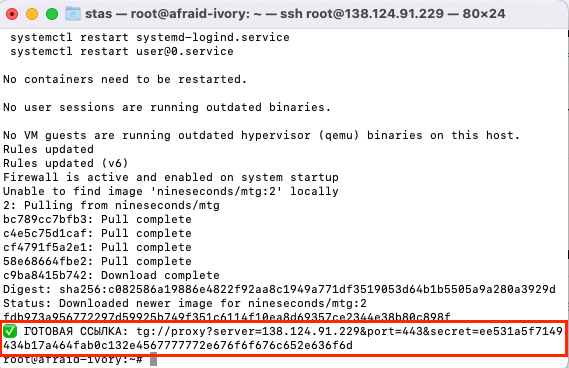
Готовый MTProto прокси на сервере
Все, на этом установка завершена.
Что делает и устанавливает на Ваш сервер данная команда:
- Обновляет список пакетов
- Устанавливает все обновления системы
- Ставит утилиту curl
- Автоматически устанавливается Docker
- Настраивается MTProto прокси на порту 443
- Включается технология Fake TLS — маскировка под обычный HTTPS
- Генерируется секретный ключ
Всё это занимает 1–2 минуты. Просто ждите.
Далее скопируйте полностью ссылку для телеграмма — tg://proxy?server=194.33.35.192&port=443&secret=ee3a44c56ab55a1a368eb3b260a2550432676f6f676c652e636f6d
И приведите ее к такому виду, как показано на скриншоте
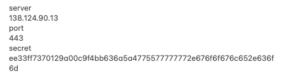
Данные для подключения прокси в Telegram
Будьте внимательны! Сервер = цифры, порт = цифры, секрет = абракодабра целиком!
Отправьте эти данные себе на телефон или отсканируйте кюард код. Вы можете смело подключить 50 — 70 устройств и даже заработать на этом.
Шаг 3 — Подключение mtproto прокси для телеграмм
Перейдите в меню настроек и найдите — Данные и память, как показано на скрине и нажмите на этот пункт.
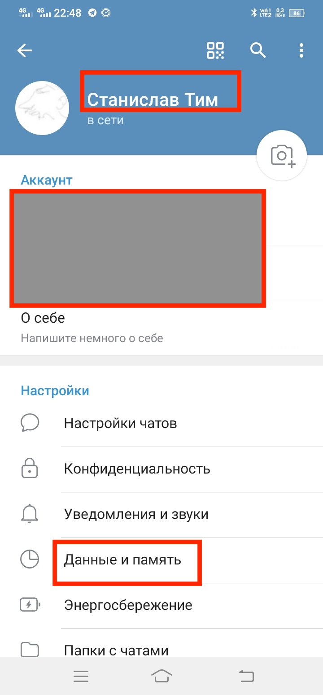
Меню "Данные и память" в Telegram
Далее в следующем окне прокрутите вниз и найдите пункт — Настройка прокси, см. скрин.
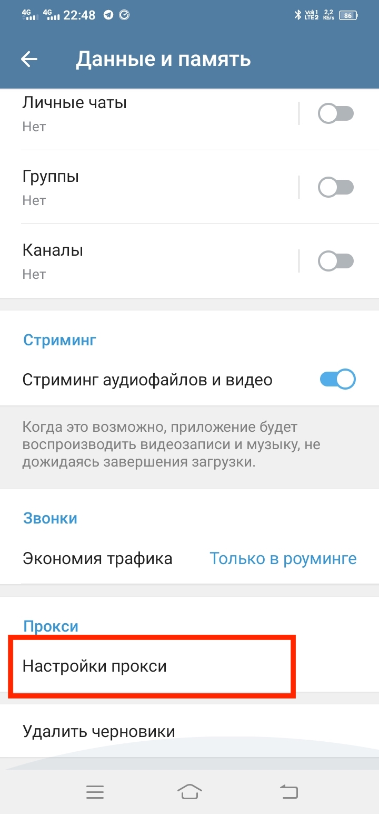
Пункт "Настройка прокси" в Telegram
Нажмите на него и попадете в окно настройки вашего прокси
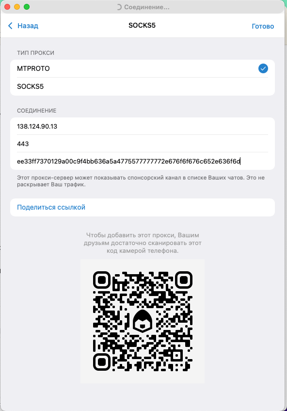
Окно настройки прокси в Telegram
Вставьте подготовленные данные, как показано на скрине выше. Адрес сервера, порт и секретный ключ. Вы должны увидеть следующее:
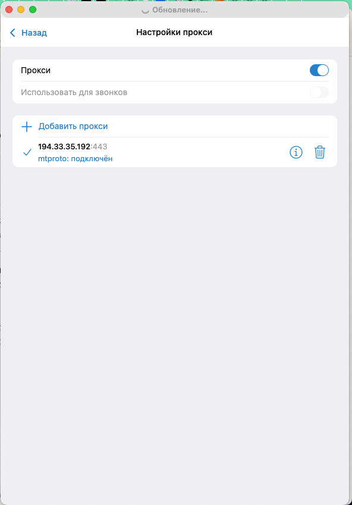
Подключение прокси в Telegram
Запустите свой телеграмм на телефоне или ПК. Должно сработать подключение, и Телега заработает. Возможно, при первом подключении пройдет пара минут, пока чаты обновляются.
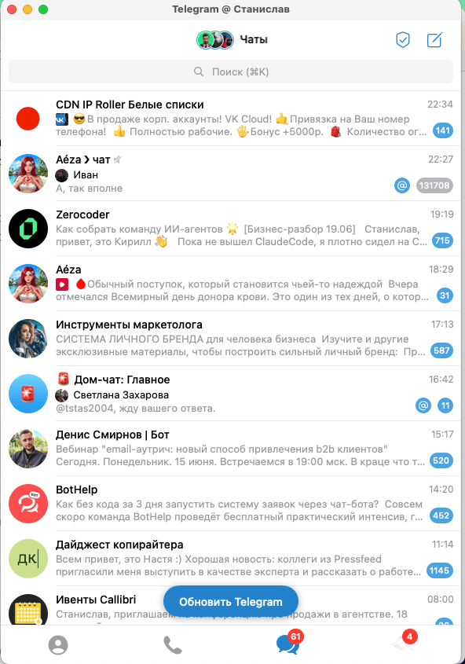
Работающий Telegram через MTProto прокси
Заключение
Вы успешно прошли все 3 шага:
- ✅ Арендовали VPS в Aeza
- ✅ Установили MTProto прокси одной командой
- ✅ Получили ссылку и подключили Telegram
Теперь у вас собственный приватный MTProto прокси для Telegram — стабильный, быстрый и безопасный.
FAQ — частые вопросы
1. Можно ли установить MTProto на Windows?
Да, но инструкция сложнее. Для простоты и стабильности лучше использовать Ubuntu на VPS.
2. Сколько трафика потребляет прокси?
Почти весь трафик зависит от вас — сколько вы сидите в Telegram. Обычно не более 2-3 ГБ в месяц.
3. Как удалить прокси?
На сервере выполните:
docker stop mtproto-proxy && docker rm mtproto-proxy
4. Нужно ли продлевать сервер каждый месяц?
Да, это аренда. Если не продлить — прокси отключится. Telegram просто перестанет подключаться, и вы вернётесь к обычному интернету без прокси.
Надеюсь, мне удалось рассказать, как подключить mtproto для телеграмм.
Оставить комментарий
Задавайте вопросы, делитесь опытом или предложениями
Все комментарии проходят модерацию перед публикацией.